Read these instructions carefully. You will only be paid if the points you select are consistent with 4 other individuals on the same task. If you differ too much from what other people pick, YOU WILL NOT BE PAID.
Instructions
Human-object contact points are the usual places on an object where a human touches an object when they interacts with it in a particular action mode. Different action modes can potentially mean different contact points for the same object.
In this task we ask you to highlight contact points on an object for a particular action. Below are example correct clicks for hand contact points for a human carrying a handbag. Note that your goal is to click on typical hand contact points (i.e., handbag hand-holders) even if they are occluded by a human hand, or a person is touching a backpack at a different region than the usual contact-points, or if there is no person at all.
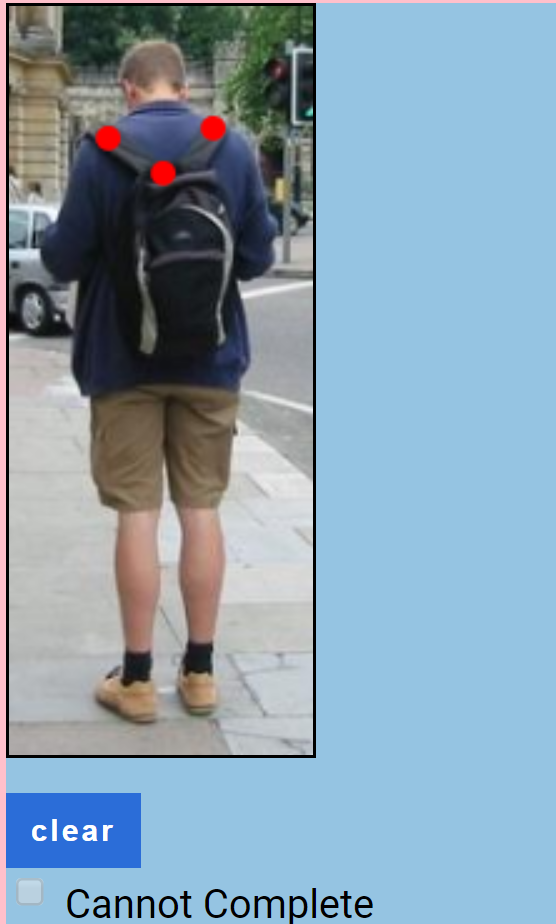
Click on hand-contact points of the handbag in each image
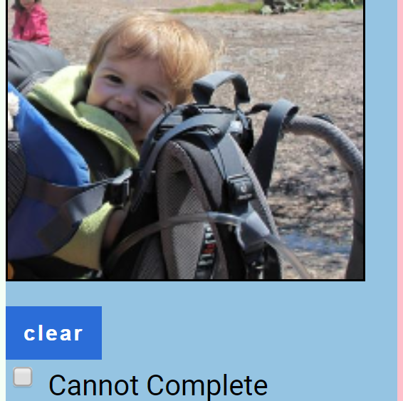
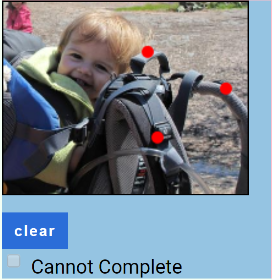
If the person is not interacting with a handbag, still click on typical contact points if a person were to interact with a handbag (i.e.,handbag handles in the example above)
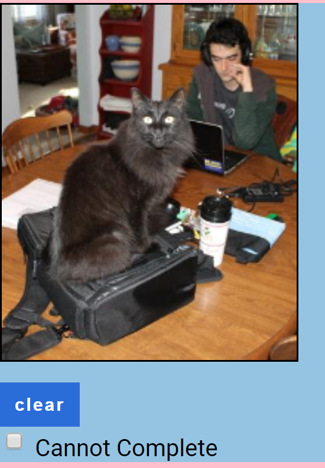
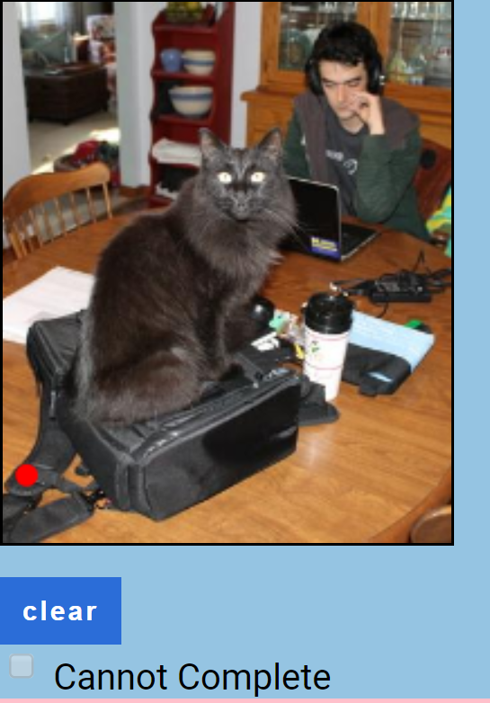
Click on typical contact points even if there is no contact between the human and handbag
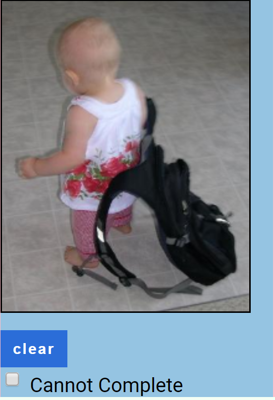
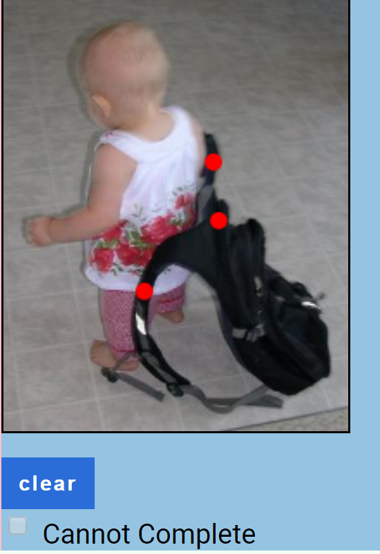
click on all contact points even if the human is only interacting with some, but not all, of the points
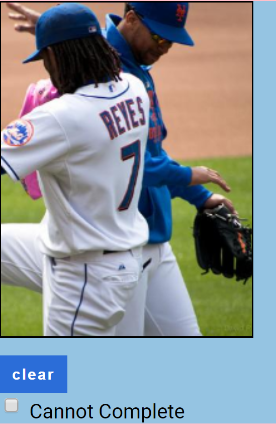
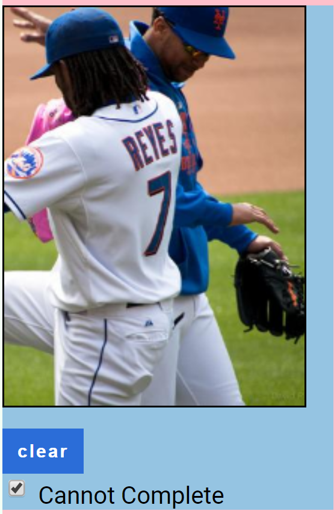
If the contact points are unclear, out of frame, or you cannot select them for any other reason, please check the
Cannot Complete box. Please only use this option as a final resort. Erroneously clicking this box means you will NOT get paid. Very few images, if any, should have this box clicked on.
 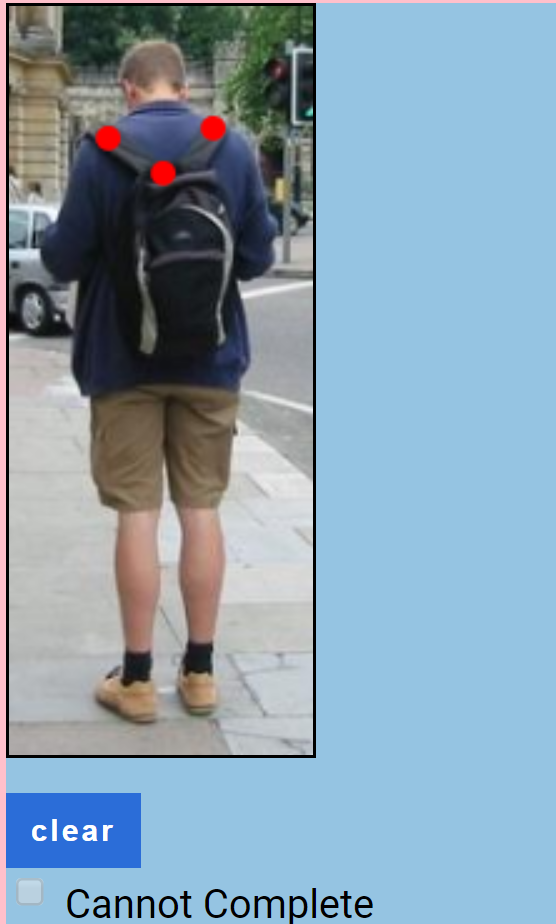
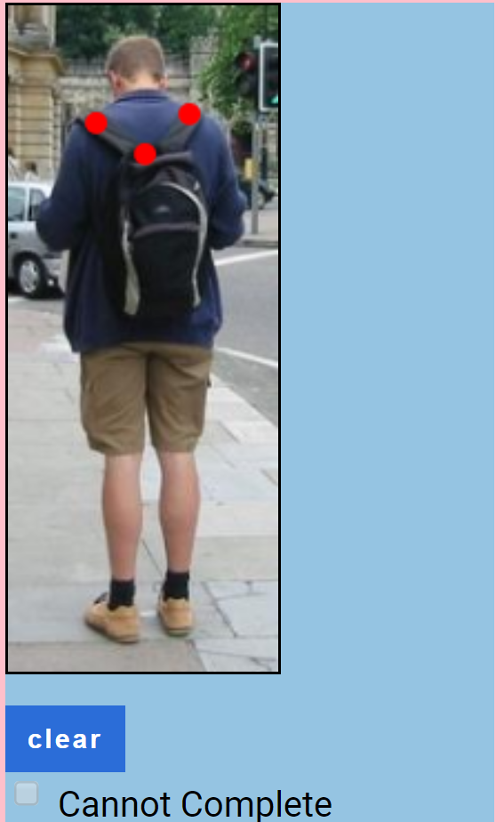